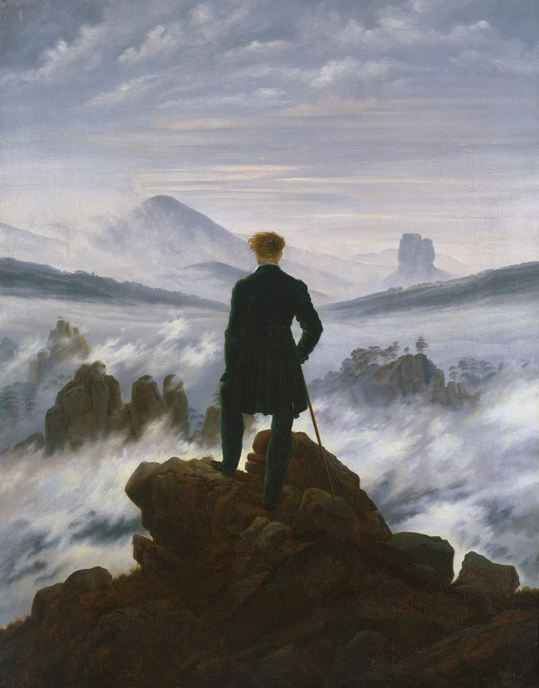

Wanderer above the Sea of Fog Explained: Who He Is and Where He Stands
Caspar David Friedrich's climber is one of the most recognised figures in European painting, yet nobody knows who he is, and the view he looks at never existed in one place. This is how the picture was put together, and why his back is turned.

Most people could describe this painting without looking it up. A man stands on a rock above the clouds, his back to us, hair blown by the wind. It has become shorthand for adventure and solitude, and, as the museum's own text notes, it has found a new life in the age of social media.
Two plain facts sit underneath that fame. Nobody knows who the man is. And the landscape around him was never seen from any single spot. Friedrich built it, piece by piece, from drawings made in different places and different years.
A man with no face
Friedrich often painted people from behind. German has a word for such a figure, Rückenfigur, and the museum calls this one the most prominent in all his work. He is placed dead centre and painted large. In the museum's reading, the mountain slopes on either side fall towards him, and his figure stresses the strong horizontal running across the middle of the canvas.
The art historian Joseph Leo Koerner looks even more closely. The man, he points out, sets the central vertical axis of the whole picture, and his waist, marked by the gathering of his green coat, lies on the canvas's midline. Koerner suggests that all the lines of sight converge on him, rather than on some vanishing point in the distance. Look at the picture with that in mind and it holds up. The fog banks and hills spread out from him like wings.
So who is he? Koerner records a tradition, dating from before the canvas came onto the art market in the 1930s, that he is a senior forestry officer called von Brincken, whom historians have tied to a Colonel Friedrich Gotthard von Brincken of the Saxon infantry. Koerner reads the green coat as the uniform of the volunteer rangers raised to fight Napoleon, and notes that von Brincken was probably killed in 1813 or 1814, which would make the painting a patriotic memorial.
It is an attractive story, but the museum is more cautious. Its catalogue text says recent attempts to solve the riddle have multiplied, yet there are no reliable indications of whom Friedrich might have been portraying. It also reads his clothes differently: to the museum he is a city dweller who has gone out into nature to enjoy it aesthetically. The safest answer is the one the museum gives. He could be anyone, and that may be the point. The Oxford Dictionary of Art and Artists says that Friedrich's figures seen from behind are faceless so that they "serve as 'everyman'".
Looking over his shoulder
Turning the man away changes what we do in front of the picture. We do not quite look at the view. We look over his shoulder at someone looking at it. The museum puts it as strongly as it can: Friedrich makes vision itself the real theme of the painting.
That is also why the fog matters. Koerner quotes Friedrich's own view, written down elsewhere, that a landscape wrapped in fog seems larger and more sublime, and stirs the imagination more than one seen clearly. In the painting, the fog hides far more than it shows. You see peaks, a few rocks, some trees, and then whiteness. What lies in between is left for you to fill in.
Friedrich still keeps a careful grip on distance. Koerner points to a small fir by the man's left knee, on the nearest rocks, painted so precisely you could count its twigs. Further out, trees become clumps, then dots, then something like smoke. Follow that line from the foreground outwards and you can feel the space open up even though most of the ground between is hidden.
A view stitched together
Now look at the land itself, because here the picture turns out to be a careful piece of assembly.
According to the museum, only a few preparatory drawings survive, and they cover parts of the painting, not the whole. But those that do survive are revealing.
Start at the bottom, with the rock the man stands on. Friedrich took it from a drawing he made on 3 June 1813 while climbing the Kaiserkrone, a peak in Saxon Switzerland. The drawing, now in Dresden, is small: Koerner gives it as 11.1 by 18.5 centimetres. On its left edge Friedrich drew a vertical stroke and wrote a note beside it, which the museum translates as "at this height above the tallest peak of the stone is the / horizon." He was recording not just the shape of the rocks but where the horizon lay from where he stood. The museum sees in that note how much the painting's sense of space depends on Friedrich's own experience of looking. In the finished picture, the far hills meet the sky at roughly the height of the wanderer's head.
Next, look left into the distance, at the cone-shaped mountain wreathed in mist. That comes from a much earlier study, made in May 1808, of the Rosenberg in Bohemian Switzerland. On the far right, the flat-topped block of rock answers it: the museum identifies it as the Zirkelstein, a distinctive landmark of the region.
Then come back to the middle ground on the left, to the jagged cluster of rocks rising out of the fog. Friedrich based those on another 1808 drawing, of the Gamrig near Rathen in Saxon Switzerland, altering their shape a little for the painting.
So the rock underfoot was drawn in 1813, the mountain and the crags in 1808, and they come from places Friedrich visited separately. Together they make a view that is entirely believable and could not be seen from anywhere. He did the same with the figure: the composition is arranged around him, not around a real vantage point.
When it was painted
The museum dates the painting to about 1817. Other writers, including Koerner and the Oxford Dictionary, place it about 1818. Neither year is certain, and both are reasonable. It was acquired in 1970 and hangs in the Hamburger Kunsthalle on long-term loan from the Stiftung Hamburger Kunstsammlungen.
Living with the wanderer
This is a picture people know almost too well, as a poster or a book cover, often cropped so the man fills the frame. It is more interesting whole. Koerner's point about the fir by the knee, the Zirkelstein on the right, the vertical stroke of the horizon, the weather moving in the upper sky: these are things you notice slowly, over several days, not in a few seconds in front of a crowd.
The painting is taller than it is wide, so on a 16:10 Mac screen it takes up only about half the width. artbip does not crop it. The whole canvas sits in the middle, from rock to sky, over a softly blurred version of itself or a colour taken from its palette. The app's longer note on the painting covers the wanderer, the drawings and the mountains he looks at.
Sources
- Wanderer above the Sea of Fog, um 1817 (Markus Bertsch, exh. cat. Hamburg 2023, p. 196), Caspar David Friedrich 250th anniversary website (cdfriedrich.de)
- Joseph Leo Koerner, Caspar David Friedrich and the Subject of Landscape, 2nd edition
- Ian Chilvers, The Oxford Dictionary of Art and Artists, 4th edition (Oxford University Press, 2009)